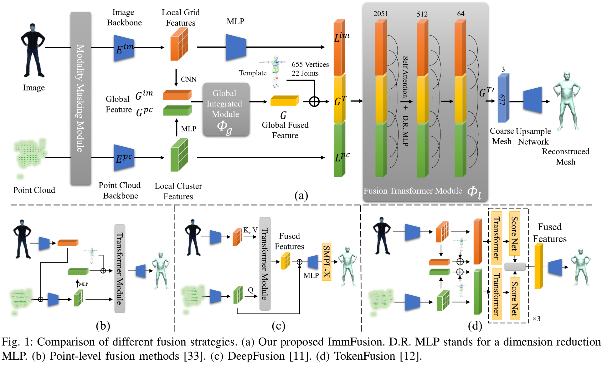
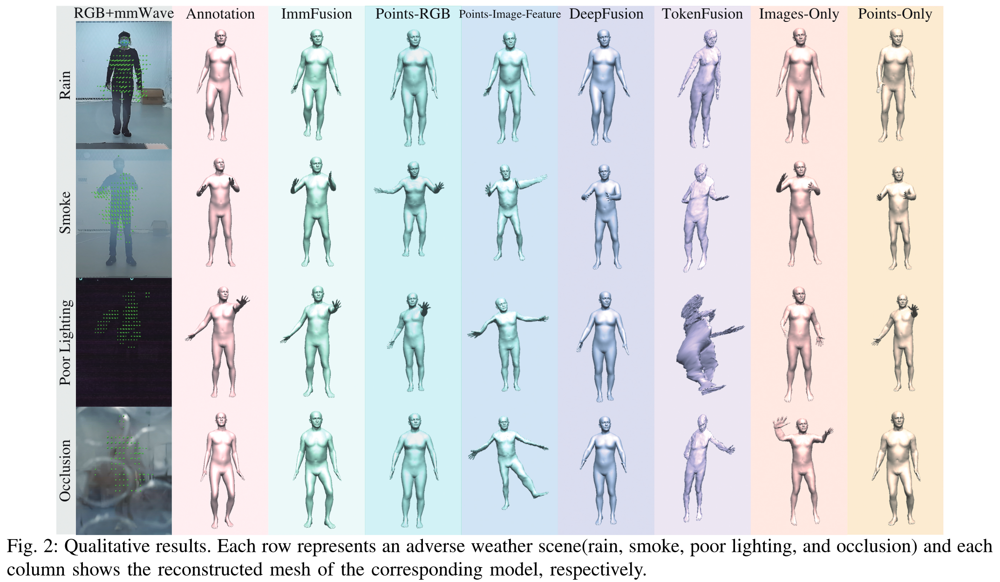
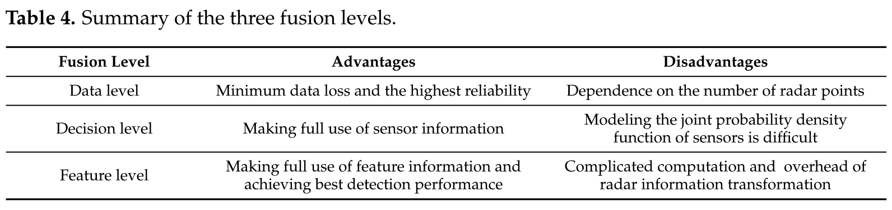
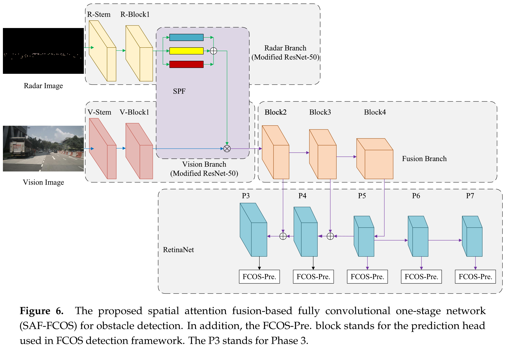

mmWave Radar Fusion 论文总结
ImmFusion: Robust mmWave-RGB Fusion for 3D Human Body Reconstruction in All Weather Conditions
- 2022, Arxiv
- Question: How to merge mmWave radar with RGB frames to do 3D human mesh reconstruction?
- Spec: Single person, 3D mesh, RGB + mmWave Radar.
- Features: Robust in extreme weather/conditions like rain, smoke, low light, and occlusion.
Points
-
Merging scheme: Using three branches: Image branch, radar point cloud branch, and a fusion branch. All three branches are concatenated and sent to a transformer. A human template is also concatenated as “positional encoding” (actually it’s more like prior knowledge encoding.)

-
Previous fusion methods:
- Point-level fusion method: Concatenate image features or projected RGB pixels to the point clouds as extended features of the point-based model.
- This fusion strategy is not suitable for mmWave-RGB fusion due to the sparsity and noise of radar points.
- Undesirable issues like randomly missing and temporally flicking would lead to fetching fewer or even wrong image features.
- DeepFusion: Treat image features as K and V, answering Qs from mmWave point cloud features.
- TokenFusion: Do feature extraction and go through the transformer separately for both image and radar features. Fusion happens in the last stage.
- Point-level fusion method: Concatenate image features or projected RGB pixels to the point clouds as extended features of the point-based model.
-
They perform positional encoding by attaching the 3D coordinates of each joint and vertex in a human template mesh to the global vector.
-
Raw radar side input has a shape of , which means 1024 mmWave radar point cloud in the cropped body region. Here it’s not clear how can this dimension keeps the same among all samples, but there should be a sampling mechanism to always sample 1024 points exactly.
-
Image feature part, they use HRNet to extract the feature of cropped body region.
-
They use
PointNet++to process raw radar point clouds, and the length of the resulting feature map (L) represents the number of seed points sampled by the Farthest Point Sample (FPS). -
Results:

MmWave Radar and Vision Fusion for Object Detection in Autonomous Driving: A Review
- 2022, Sensors (MDPI)
- This paper discussed various fusion methods used by previous mmWave + Vision sensor papers.
Fusion Methods
-
Data Level
- Mature, but not the mainstream method.
- Basically, using radar to detect the ROI, and crop the visual frame accordingly.
- The size of the initial ROI is determined by the distance between the obstacle and mmWave radar.
- Radar’s information loss is significant.
-
Decision Level
- This is the mainstream fusion scheme at present.
- The basic guideline is to process radar and vision data separately in parallel, let them do the final prediction also separately, and only fuse the predicted results.
- Radar detection results generate a list of objects and contain information such as the distance, azimuth angle, and relative velocity of the detected objects.
- The fusion method can be divided into Bayesian theory-based, Kalman Filter-based, Dempster Shafer Theory-based, and Radar Validation-based.
-
Feature Level
- This is a relatively new strategy.
- The core idea is to extract the feature from both sensors, fuse them, and do the prediction.
- The fusion methods are usually concatenation, point-wise addition, or spatial attention fusion.
- Note that the goal of fusion here is to compile an RGB image-like feature map, and the object detection module here can be any traditional CV object detection algorithm.
- Radar feature extraction mostly adopts the method of converting radar points to the image plane to generate a radar image. The purpose of radar feature extraction is to transform radar information into imagelike matrix information. Each radar-generated feature map’s channel represents a physical quantity such as distance, longitudinal speed, lateral speed, and so on.
Future Trend
- 3D Object detection. The existing Radar-Vision fusion works are mainly 2D object detection, and 3D detection results are far worse.
- Integrate new sensors.
- Better ways of sensing information fusion (multi-modal fusion).
- Better ways to deal with sparseness brought by radar.
- More efficient multi-sensor fusing methods.
Calibration
- Coordinate transformation method: Radar and camera are placed in the same coordinate. Using the camera and radar’s absolute coordinates, perform a linear transformation to calibrate.
- Sensor verification method: Radar proposes a target list at first, and then verifies and matches using vision information.
- Vision-based method: Propose candidate areas for moving targets using the camera, and match radar results to it.
Spatial Attention Fusion for Obstacle Detection Using MmWave Radar and Vision Sensor
- 2020, Sensors (MDPI)
- Core Contribution: Proposed a novel attention-based radar-vision fusion mechanism to do obstacle detection.
- Taxonomy: Feature level fusion. (Attached is another taxonomy.)
Points
-
Network structure: The feature extractor part is not anything new, it is a combination of modified ResNet and RetinaNet. The fusion mechanism is the part where it has the edge on.
 -
The core mechanism: SAF, aims to predict an attention map generated by radar feature, and point-wise multiply this attention map by the feature extracted from vision features.
-
The “radar image” they used is transformed from radar points, which is shown as follows:
- They calculate the extrinsic matrix of the radar and front camera separately, transforming the radar point cloud into camera coordinates.
- They calculate the pixel value of the radar image using depth , longitudinal velocity and lateral velocity . The here is a linear transformation for these three variables.
- Lastly, since each pixel covers a too-small area of the image, they render a solid circle around each radar point. The value within the circle is the same, and the circle’s radius is .
- If there there are two radar points whose distance is less than , in the intersection area, use the value of the nearer one (the one with a smaller ).
Tools
- ROsPKG: Turn raw radar data to point clouds.
- RadHAR: Point Cloud Data collection and pre-processing (Voxel Generation) examples can be found here. This is from a paper: RadHAR: Human Activity Recognition from Point Clouds Generated through a Millimeter-wave Radar
- Point Cloud-related questions on TI: Link (They used IWR 1843 BOOST & DCA 1000 EVM)